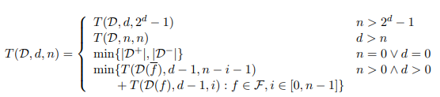
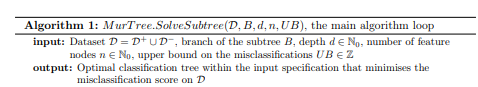
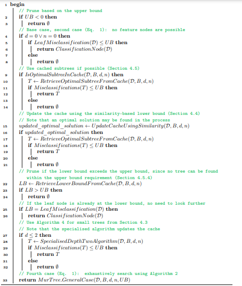
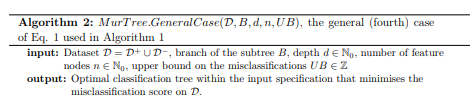
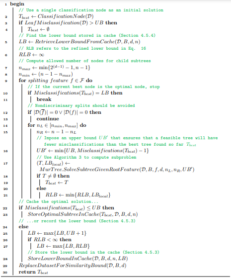
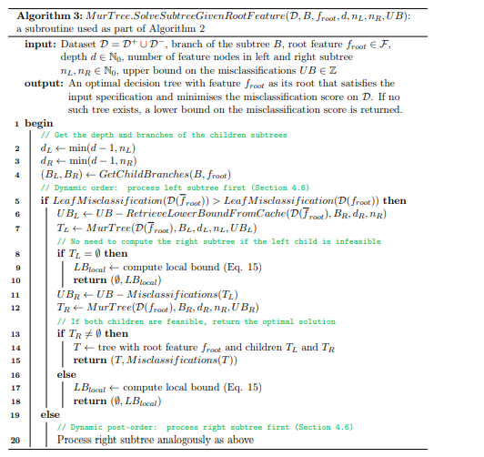
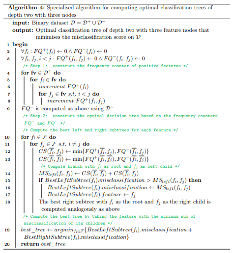
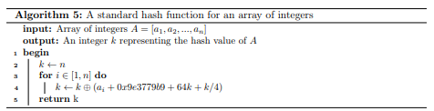
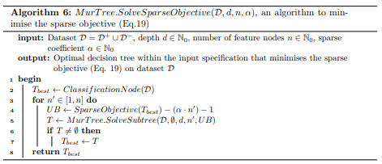
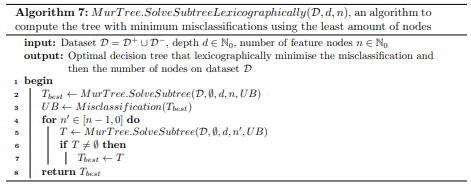

The Murtree Algorithm computes optimal classification trees by exhaustive search. The search space is exponentially large, but special measures are taken to efficiently iterate through all trees, exploit the overlap between trees, and avoid computing suboptimal decision trees.
The following equation is the core foundation of the algorithm. The input parameters include: the dataset \(D\) , \(F\) features (a variable that encodes information about an object ), an upper bound on depth \(d\), and an upper bound on the number of feature nodes \(n\) [1]. The output is the minimum number of misclassifications. The first and second case places constraints on the \(n\) and \(d\) to avoid redundancy. For the first case, if the specified upper bound on the number of feature nodes \(n\) is greater than \(2^d-1\), where \(d\) is the upper bound on the depth of the decision tree, then the function recursively call itself with \(n\) replaced by \(2^d-1\). The maximum number of nodes in a binary tree of depth \(d\) is \(2^d-1\), as each node in the tree has at most two child nodes. So, if the specified upper bound on the number of feature nodes exceeds the maximum number of nodes possible at depth \(d\), the function adjusts \(n\) to \(2^d-1\) to adhere to this constraint. For the second case, if the specified upper bound on the depth of the decision tree \(d\) is greater than the number of feature nodes \(n\), then the function resets the depth limit to be equal to the limit on the number of feature nodes, ensuring that the depth of the decision tree does not exceed the maximum number of nodes specified.
The third case captures the situation where the node must be declared as a classification node, i.e., the node is labelled according to the majority class [1]. Here, if upper bound on the number of feature nodes \(n\) is equal to the depth of the decision tree \(d\) or the upper bound on the depth of the decision tree \(d\) is equal to zero, then the function returns the minimum of the cardinality (the total number of unique elements in a set) of the positive class instances \(|D^+|\) and the negative class instances \(|D^-|\) in the dataset \(D\). The fourth case involves a recursive calculation of the minimum misclassification score among all possible combinations of splitting a node into two child nodes, considering different features \(f\) and different number of feature nodes \(i\) from \(0\) to \(n-1\)
For each feature \(f\) in the set \(F\), and for each possible number of feature nodes \(i\) from \(0\) to \(n-1\):
\(T(D(f), d-1,i)\) computes the misclassification score when splitting the dataset \(D\) using feature \(f\) into two subsets and recursively building a decision tree of depth \(d-1\) with \(i\) feature nodes in one of the child nodes.
\(T(D(\bar{f}), d-1,n-i-1)\) computes the misclassification score when not using feature \(f\) ( \(\bar{f}\) ) for splitting, recursively building a decision tree of depth \(d-1\) with \(n-i-1\) feature nodes in one of the child nodes.
The total misclassification score is the sum score of splitting at the current node using feature \(f\) and not using feature \(f\), respectively.
The min function then selects the combination of feature and number of feature nodes that results in the minimum total cost among all possible combinations.

The input parameters include: a data set \(D\) consisting of positive \(D^+\) and negative \(D^-\) instances, branch information of the subtree \(B\), the depth \(d\), the number of feature nodes \(n\). Additionally, an input parameter for an upper bound that represents a limit on the number of misclassification before the tree is deemed infeasible, i.e., not of interest for example since a better tree is known [1]. The output is an optimal classification tree considering the input constraints or indication that no such tree exists (infeasible).
In lines 2-8, the algorithm starts by checking if the upper bound \(UB\) is negative. Furthermore, it checks if the misclassification score of \(T\) exceeds the upper bound \(UB\) given that depth \(d\) or number of feature nodes \(n\) equals \(0\). If so, infeasibility is returned.
In lines 9-14, the algorithm then checks if the optimal subtree is in the cache. The cache includes information (the lower bound and/or the optimal root node of the subtree under constraints on the depth and number of feature nodes, which includes the root feature, the number of feature nodes in its left and right children, and the misclassification score) about the computed optimal subtree. If the optimal subtree is in the cache, it is retrieved and stored in \(T\), the algorithm checks if the misclassification score of the optimal subtree \(T\) is lower than or equal to the upper bound \(UB\) . If this is the case, then \(T\) is returned as the optimal subtree, otherwise infeasibility is reported.
In line 15, the algorithm updates the cache using similarity-based lower bound \(UpdateCacheUsingSimilarity(D,B,d,n)\) assuming that the optimal subtree is not in the cache. The optimal solution may be found in the process. Here, given a dataset \(D_{new}\) for a node, the method helps to derive a lower bound by considering the previously computed optimal decision tree using the \(D_{old}\) . It considers the difference in the number of instances between \(D_{old}\) and \(D_{new}\) . Given the limit on the depth \(d\) and number of feature nodes \(n\), a dataset \(D_{new}\) , and the dataset \(D_{old}\) with \(T(D_{old},d,n)\) as the misclassification of \(D_{old}\). The similarity-based lower bound is defined as,
\[ LB(D_{new},D_{old},d,n)=T(D_{old,d,n})-|D_{out}|, \hspace{3cm} [1] \]
which is a lower bound which is a lower bound for the number of misclassifications of the optimal decision tree for the dataset \(D_{new}\) of a tree depth \(d\) with \(n\) feature nodes [1].
In lines 16-21, the algorithm checks if the optimal solution (\(updated\_optimal\_solution\)) was found in the process, if so it checks if the misclassification score is lower than or equal to the upper bound \(UB\). If so, then the optimal decision tree \(T\) is returned. Otherwise, infeasibility is reported.
In lines 22-26, the algorithm attempts to prune based on the updated lower bound stored in the cache. It retrieves the lower bound where \(LB\) is the \(RetrieveLowerBoundFromCache(D,B,d,n)\) and checks if the updated lower bound \(LB\) is greater than the upper bound \(UB\). If so, infeasibility is reported. If \(LB\) is equal to the misclassification score of the classification node, a classification node is returned.
In lines 27-32, the algorithm checks if the depth \(d\) is less than or equal to 2. If so then, the specialized algorithm for tree of depth two (explained in Algorithm 4) (\(SpecialisedDepthTwoAlgorithm(D,B,d,n)\)) is implemented. If the misclassification score from the optimal tree \(T\) is less than or equal to the upper bound \(UB\), then \(T\) is returned as the optimal decision tree. Otherwise, infeasibility is reported.
In line 33, the algorithm considers the general case (Core Equation case 4), where the algorithm exhaustively explores the search space through overlapping recursions [1]. This is detailed in Algorithm 2.

The general case of the core equation used in the main algorithm (Algorithm 1) is implemented if none of the conditions took place in Algorithm 1. Similar to Algorithm 1, the input parameters include: a data set \(D\) consisting of positive \(D^+\) and negative \(D^-\) instances, branch information of the subtree \(B\), the depth \(d\), the number of feature nodes \(n\). Additionally, an input parameter for an upper bound that represents a limit on the number of misclassification before the tree is deemed infeasible, i.e., not of interest for example since a better tree is known [1]. The output is an optimal classification tree considering the input constraints or indication that no such tree exists (infeasible).
In lines 2-4, the algorithm uses a single classification node as the initial \(T_{best}\) solution. If the misclassification score of the classification node is greater than the upper bound \(UB\) then the initial solution \(T_{best}\) single classification node is reported as infeasible.
In lines 5, the lower bound \(LB\) is retrieved from the cache
In line 6, the refined lower bound \(RLB\) is defined. The refined lower bound \(RLB\) is defined as,
\[ LB_{local}(D,f,d,n_{left},n_{right})=LB(D(\bar{f},d-1,n_{left}))+LB(D(f,d-1,n_{right})) \hspace{2cm} \] \[ RLB(D,d,n)=\min{\{LB_{local}(D,f,d,n_{left},n_{right})|f \epsilon F \land n_{left}+n_{right}=n-1 \}} \hspace{2cm} [1] \]
Here bound \(RLB\) considers all possible assignments of features and numbers of feature nodes to the root and its children, and selects the minimum sum of the lower bounds of its children [1].
In lines 7-8, the algorithm computes the allowed number of nodes for child subtrees. In line 7 where \(n_{max} \leftarrow min{\{2^{(d-1)}-1,n-1\}}\), \(2^{(d-1)}\) calculates the maximum number of possible feature nodes possible in the subtree with depth \(d-1\). Recall from the core equation that a decision tree with depth \(d-1\) can have at most \(2^{d-1}\) nodes and the \(-1\) accounts for the root node. Here, \(n-1\) is the upper bound on the number of feature nodes. The minimum of these two values is selected. In line 8, \(n_{min} \leftarrow (n-1-n_{max})\) calculates the remaining number of feature nodes after accounting the maximum allowed nodes (\(n_{max}\) ).
For line 9, the algorithm begins the for loop for splitting feature \(f\) in the set \(F\).
In lines 10-11, the algorithm checks if the current best classification node \(T_{best}\) is the optimal node by confirming if it is equal to the lower bound \(LB\). If so, the loop stops as the optimal decision tree has been found.
In lines 12-13, attempt to ensure that nondiscriminary splits are avoided. The condition if \(|D(\bar{f})|=0 \lor |D(f)|=0\) implies that after splitting the dataset \(D\) based on feature \(f\), one of the subsets is empty. This means that the feature \(f\) does not provide any discriminatory power for separating the classes in the dataset or, does not help to separating the classes effectively. These splits do not provide useful information for classification. By excluding these non-discriminatory splits, the decision tree becomes more efficient and less prone to overfitting.
In line 14, the algorithm considers all possible combinations of distributing the remaining node budget amongst its left \(n_L\) and right \(n_R\) subtrees. A nested for loop begins for each feature split where the \(n_L\) values are in the interval \([n_{min}, n_{max}]\) .
In lines 15-17, the algorithm \(n_{R} \leftarrow n-1-n_{L}\) calculates the difference between the total number of number of feature nodes and the number of feature nodes on the left subtree and assigns it to \(n_R\) (this difference represents the number of feature nodes available for use on the right subtree of the split). An upper bound \(UB'\) is then imposed by getting the minimum between the upper bound \(UB\) and the misclassifications score of the best tree \(T_{best}\) found thus. Algorithm 3 is then used to compute the optimal tree given the feature of the root and number of features in children subtrees (tree configuration) or reports a lower local bound. In lines 18-21, if \(T\) is not considered infeasible then the best tree \(T_{best}\) is returned as the optimal tree \(T\). Otherwise, the refined lower bound \(RLB\) is used by getting the minimum between the refined lower bound and local lower bound \(LB_{local}\) . This is where the nested for loop concludes
In lines 22-30, after exhausting all feature splits for the root node, if the misclassification score of the best tree thus far \(T_{best}\) is lower than or equal to the upper bound \(UB\), it is stored in cache as the optimal subtree. Otherwise, the lower bound \(LB\) is computed and stored in the cache. The refined lower bound is combined with the upper bound to get a lower bound for the instance where no optimal subtree with less than the upper bound \(UB\) could be found. This done using:
\[ T(D,d,n) \geq max{\{RLB(D,d,n), UB+1\}} \hspace{3cm} [1] \]
The optimal tree is then returned.

This algorithm is a subroutine used in general case (Algorithm 2) to compute the optimal tree given the tree configuration. The algorithm is used a strategy that prioritizes the subtree with the greater misclassification score of its leaf node as this subtree is more likely to result in a tree with more misclassifications [1]. If one subtree has a high misclassification score it increases the likelihood of pruning the other sibling [1]. Dynamic ordering is used where the left subtree is processed first.
The input parameters include: a data set \(D\) consisting of positive \(D^+\) and negative \(D^-\) instances, branch information of the subtree \(B\), the root feature \(f_{root}\), the depth \(d\), the number of feature nodes in the left and right subtree \(n_{L},n_{R}\). Additionally, an input parameter for an upper bound that represents a limit on the number of misclassification before the tree is deemed infeasible, i.e., not of interest for example since a better tree is known [1]. The output is an optimal classification tree with feature \(f_{root}\) as its root that considers the input constraints or a lower bound on the misclassification score is returned if no such tree exists.
In lines 2-4, the algorithm starts by obtaining the depths of the children subtrees from feature nodes in the left and right subtrees. The branches of the children subtrees \(B_{L}, B_{R}\) are also obtained from the branch information and root feature inputs.
In lines 5-7, the algorithm checks if the misclassification score of the leaf node \(D(\bar{f}_{root})\) is greater than the misclassification score of the leaf node \(D(f_{root})\). If so, then the upper bound for the left subtree \(UB_{L}\) is computed first (due to dynamic ordering) and assigned by getting the difference between the upper bound and the lower bound from the cache. The optimal left tree is then stored in \(T_{L}\).
In lines 8-10, the algorithm checks if the left subtree is infeasible. If so, the local lower bound \(LB_{local}\) is computed and returned. Recall from Algorithm 2 that the local lower bound is the sum of the left and right subtree lower bounds for the number of misclassifications of an optimal decision tree for \(D,n,d\).
In lines 11-18, the upper bound for the right subtree \(UB_{R}\) is obtained by getting the difference between the upper bound \(UB\) and the misclassification score of the left optimal subtree \(T_{L}\) . From the pseudocode, we observe that it is not needed to compute \(UB_R\) using the cache if the left child is infeasible. The optimal right subtree is then stored in \(T_{R}\). If the \(T_{R}\) is feasible, a tree with including the root feature \(f_{root}\) and optimal left and right children subtrees (\(T_{L},T_{R}\)) is stored in \(T\) . \(T\) is then returned as the optimal solution along with the misclassification score of \(T\). Otherwise, the local lower bound is computed and returned.
In lines 19-20, the algorithm repeats the process for the right subtree first. 



